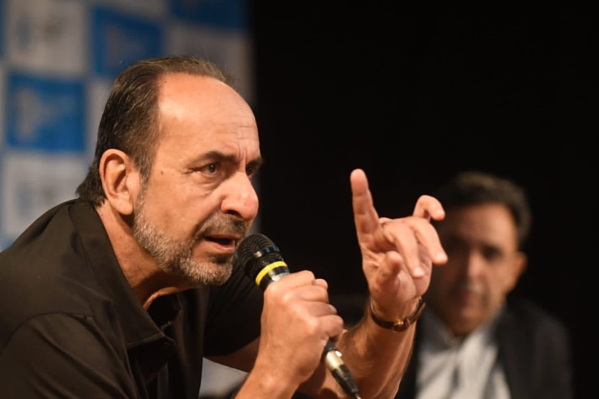

Poder, influência e suspeitas de irregularidades: o rastro das doações eleitorais de 2020
Levantamento revela conexões entre doadores e empresas com concessões municipais, distribuição de cargos e redes influentes em São Paulo, Belo Horizonte e Fortaleza
Por Camila, João, Lucas | 10/10/2024
No segundo semestre de 2024, as atenções no mundo do poder se voltam para as eleições municipais. O período de convenções partidárias, que oficializa a candidatura de quem vai concorrer aos cargos de prefeito, vice-prefeito e vereador, terminou em 5 de agosto.
Entre as etapas cruciais das eleições está a prestação de contas dos candidatos. Em 2020, as doações de campanha para candidatos à prefeitura em três das maiores capitais do Brasil – São Paulo, Belo Horizonte e Fortaleza – revelam situações que levantam suspeitas de abuso de poder e irregularidades.
Levantamento realizado com dados do TSE e da Receita Federal revela um cenário de doações feitas por pessoas ligadas a empresas com concessões municipais, cargos distribuídos na gestão local e redes empresariais associadas a famílias influentes. Leia mais abaixo.
Alexandre Kalil foi reeleito em 2020 pelo PSD —partido que deixou este ano para se juntar ao Republicanos. Em março de 2022, renunciou para disputar o governo estadual, mas acabou perdendo para Romeu Zema (Partido Novo). Seu vice, Fuad Noman (PSD) assumiu a prefeitura da capital mineira.
A campanha de Kalil recebeu R$ 749,3 mil. Dos 10 maiores doadores, 8 ganharam cargos na prefeitura. O maior repasse, de R$ 76,1 mil foi de Adriana Branco Cerqueira, nomeada como secretária de Comunicação em sua gestão. Atualmente, é Secretária Municipal de Esportes e Lazer depois de ser reconduzida por Fuad.
Eis os outros nomeados e suas respectivas doações:
Além disso, na lista ainda consta a fotógrafa Amira Hissa, sobrinha de sua irmã, Gisele Kalil. Ela doou R$ 11,5 mil.
Alexandre Kalil foi presidente do Atlético-MG de 2008 a 2014. Em 2023, já fora da Prefeitura, foi investigado por uma CPI (Comissão Parlamentar de Inquérito) por supostos “abusos de Poder”. Não foi indiciado, mas fatos graves vieram à tona.
Dentre as suspeitas, a comissão apurou a nomeação de ex-funcionários do clube no Poder Executivo. Um dos ouvidos pela CPI foi o ex-assessor da presidência da Belotur, Lucas Couto de Souza, listado entre as 10 maiores doações citadas nesta reportagem. Ele foi ex-diretor de marketing do clube.
Também na lista de doações e citada na CPI está Elizabeth Cristina Silva, ex-secretária pessoal de Kalil. Segundo informou o Galo, ela foi assessora jurídica do clube de 1997 a 2016. Atualmente, ela está na pasta comandada pela secretária e aliada do ex-prefeito, Adriana Branco.
As nomeações de Kalil para a prefeitura de Belo Horizonte ainda refletem numa rusga atual entre ele e Fuad, seu ex-vice e atual prefeito. Segundo o jornal O Globo, Kalil não teria gostado quando seus secretários e quadro técnico foram exonerados após ele deixar a gestão.
O ex-presidente do Galo também não tem afinidade com os dirigentes atuais do clube, os empresários Rubens Menin, Rafael Menin, Ricardo Guimarães e Renato Salvador, que se aproximaram de Fuad.
Devido aos descontentamentos, Kalil anunciou sua desfiliação do PSD e sua ida para o Republicanos. Apoiará o apresentador de TV Mauro Tramonte (Republicanos), adversário de Fuad Noman nas eleições de 2024. A movimentação gerou críticas até do atual ministro de Minas e Energia, Alexandre Silveira, que é do PSD e é amigo de Fuad.
Em 2020, Bruno Covas foi reeleito prefeito de São Paulo pelo PSDB. Faleceu em maio de 2021 em decorrência de um câncer no aparelho digestivo. Quem assumiu o cargo foi seu vice, Ricardo Nunes (MDB), que concorre no pleito deste ano.
A campanha de Covas recebeu R$ 3,6 milhões de pessoas físicas com sociedades em empresas — 78,26% do total (R$ 4,6 milhões) No topo da lista aparece José Ricardo Rezek, fundador do Grupo RZK —conglomerado de empresas de diversos ramos, dentre eles agro, concessões e energia, como a RZK Energia e a RZK Concessões. O empresário doou R$ 400 mil.
A RZK Concessões detém a concessão da locação de espaços comerciais em terminais urbanos ligados às linhas Azul e Vermelha do Metrô em São Paulo. Entre suas atribuições está a revitalização dos terminais, incluindo atividades de zeladoria, reforma, segurança, limpeza, manutenção e paisagismo. A empresa detém também a concessão das linhas 1 Azul e 3 Verde do Metrô de São Paulo, realizando a gestão de espaços comerciais dentro das estações.